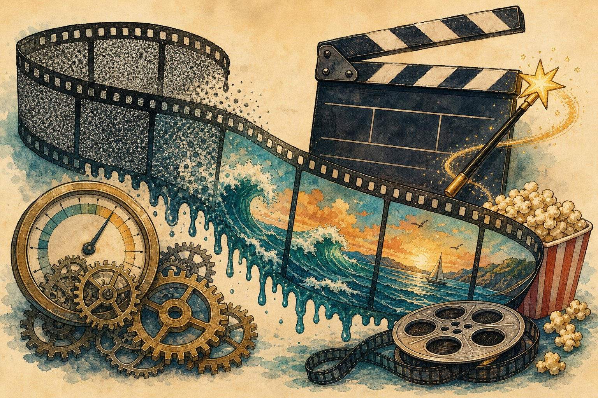

Video generation & world simulators
From text to moving pictures: how diffusion + transformers learned video, what “world simulator” claims really mean, and how to eval (and watermark) synthetic video responsibly.

Figure 53.1 — Video = images + time + physics-ish priors. Coherence across frames is the whole battle.
1. How text becomes video
- Latent diffusion + transformers: compress video to latents (VAE), denoise space-time patches conditioned on text — image diffusion (Ch 14) extended along t.
- Controls: image-to-video (first frame), inpainting, camera moves, pose/depth conditioning. Professional use = control, not vibes.
- Cost: seconds of 720p can take minutes on H100s — batch overnight, cache, and storyboard with images first.
2. “World simulators”? Calibrate the claim
- Models learn visual correlations (glasses fall, water splashes) — impressive, but not physics engines: object permanence, counting, and causality still break.
- Real uses today: previz, ads, game assets, synthetic training data (with domain-gap checks), robotics sim bootstraps.
- Test “understanding” with counterfactual prompts (reverse gravity, impossible reflections) — failures reveal pattern-matching vs modelling.
3. Eval + responsibility
| Axis | Check |
|---|---|
| Prompt fidelity | Objects, actions, counts, camera — did it follow direction? |
| Temporal consistency | No flicker, morphing faces, teleporting props |
| Physics plausibility | Shadows, reflections, collisions roughly right |
| Safety | Watermark/provenance (C2PA), face/voice consent, deepfake policies |
Deepfake duty
Same model, two uses: a product demo or election disinformation. Ship watermarking + provenance metadata, refuse real-person synthesis without consent, log generations, and build detection alongside generation. Capability without provenance is a liability.
Short notes
Video = latent diffusion over space-time patches + controls (image/camera/pose). Impressive correlations, not physics engines — probe with counterfactuals. Eval fidelity + consistency + plausibility + provenance. Watermark everything; consent for real faces; detection ships with generation.
Point notes
- Patches + denoise + decode.
- Control beats vibes.
- Correlations ≠ physics.
- Consistency > resolution.
- Watermark + C2PA always.
MCQs
5 questions1. Modern text-to-video models mostly work by:
2. Strongest test that a model “understands” physics vs pattern-matching:
3. For professional use, what matters more than raw quality?
4. C2PA provenance + watermarking exist to:
5. Using generated video as robot-training data requires checking:
Practice questions
P1. An ad agency wants a 30 s product spot from one photo. Pipeline + cost controls?
Storyboard with image gens first (cheap iteration) → image-to-video per 5 s shot with camera control → pick best takes → upscale + grade. Cost: draft at low res/steps, final render once; cache takes; human edit for hands/logos/text (models garble all three). Deliver with C2PA metadata; disclose AI use to client.
P2. Your “world simulator” demo fails when a ball rolls behind a box. Explain + fix direction.
Object permanence failure: the model renders plausible pixels, not a persistent scene state — occlusion breaks the correlation. Directions: explicit 3D/scene representations, object-centric slots, physics-informed losses, or hybrid sim (game engine geometry + diffusion rendering). Until then: don’t claim “simulator” for safety-critical planning.
P3. Write the launch checklist for a public video-gen API (safety side).
Refuse real-person/child synthesis without verified consent; face-blocklist; watermark + C2PA on every output; prompt + output classifiers (violence, CSAM → block + report); rate limits; generation logging; abuse team + takedown flow; red-team quarterly; published policy + researcher API for detection. Ship detection with generation.